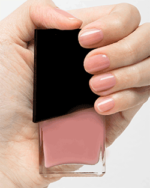
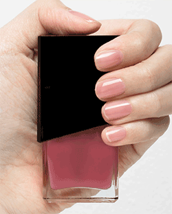

Packs are on SALE!!!

裸色
NT$200
裸米色，屬於象牙色色階 以中性色為主要調性，所以不論是與暖色系的紅、棕、黃色，或是冷色系的藍、綠，甚至連灰色系都能搭入的相當完美

add to cart
基底油-粉嫩
NT$300
對於膚色容易看起來蒼白的人，粉色飾底就能改善這樣的問題。 擦一層可當一般基本的基底油使用。 擦兩層以上就能依照自己的喜好調整潤色程度。 算是多用途型的全新概念指甲油。

add to cart
基底油-紅潤
NT$300
這個顏色是以我們天生的指甲下方透出的自然血色為發想，就像運動後，血液循環讓全身發熱時，那種健康紅。 這個色基本上任何色調的皮膚都能使用，紅潤效果都非常顯著。

粉橘色
NT$200
粉、橘色在不同的膚色上有不同的效果。如果有人問，膚色不是很白、剛結束渡假皮膚曬黑了，但想擦可愛的顏色， 那我會推薦這個

深酒紅
NT$300
新年不免俗一定要來個喜氣的紅。 是酒紅色也有人說是勃艮第紅。 膚色屬於冷調或是中間調非常適合也夠顯白。

南瓜橘
NT$250
秋冬秀場上的強檔色，混合著大地色調的橘，如果你在找顯白的橘色，可以試試這個。

沉澱藍
NT$300
Pantone發表2020年度代表色「經典藍」#ClassicBlue 可以是浩瀚的宇宙夜空也能是遼闊無邊的海洋。 屬於平靜、穩定、自信、知性的顏色

墨灰藍
NT$300
介於晴山藍與蟹青之間，也是非常古典的顏色，這種藍足以呈現休閒，能使人心情放鬆

Pack 2
NT$1000
貝殼光感指甲油+光亮上層油是新手的好夥伴，基本彩色指甲油與基礎商層油的組合，值得您擁有!